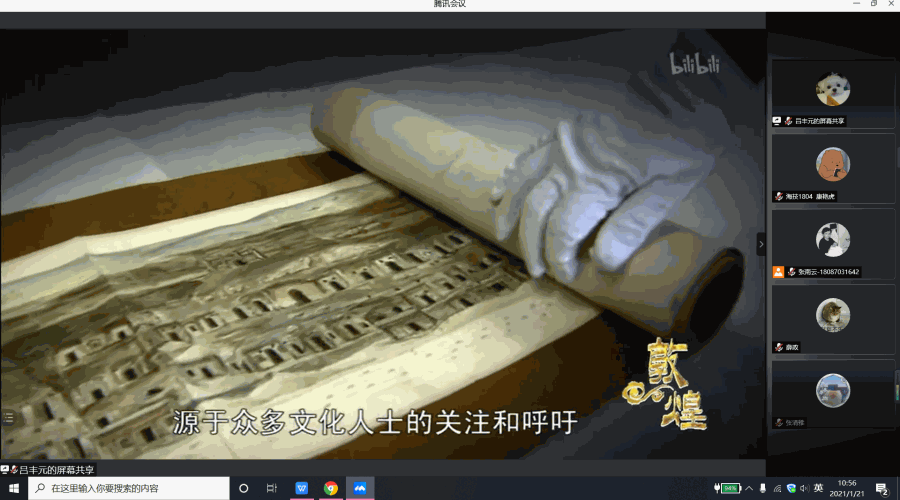
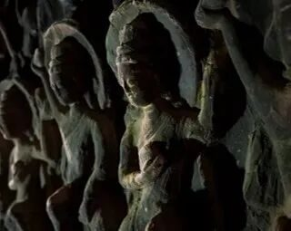
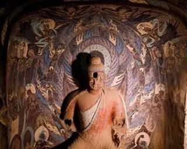
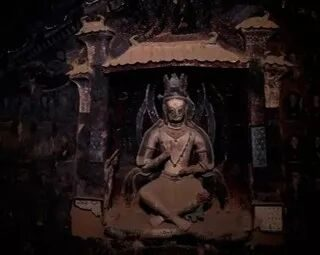
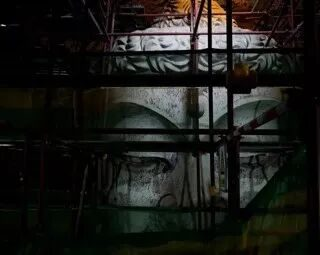
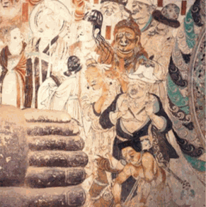

【煌然成篇·八】敦煌梦远 丝路情长
当乐僔和尚在鸣沙山东麓断崖上开凿了第一个洞窟后，莫高窟凿壁开窟的声响千年不绝。
如今，一代代敦煌守护人矢志相许莫高窟，践行着保护和传承中华优秀传统文化的使命。
“万里敦煌道，三春雪未晴。”沿着历史文明发展的大动脉丝绸之路往上，在甘肃、青海、新疆的交汇之处坐落着一处闪耀着中国古代文明辉煌的神圣之地——敦煌。这座沧桑而又神秘的古城汇聚了中国、印度、希腊、伊斯兰历史文明，吸引着来自全世界的目光，也见证了一批又一批孜孜不倦研究敦煌学人的身影。

大漠孤烟直，长河落日圆，一眼望千里，千里皆黄烟。黄土，终是掩盖不住壁画的光芒。看透了历史的兴与衰，看倦了世间的繁与累，停留在敦煌这一隅之地，似乎也是个很好的归宿。有什么渴望的呢？留下来的，不是时间的年轮，而是历史的烙印。
走一遍河西走廊，看一眼黄河之水，到了尽头，浮动的金渐渐跃然于石窟之上。没有金陵的繁华，没有长安的古老，没有烟花三月下扬州的盛况，敦煌剩下的，是带着黄土气息的壁画，它记载着前人的梦想与希望，在这远离世俗的地方，继续传承经典。

多少游人来来往往，多少笔墨写写刻刻，见过政权更替，见过岁月流逝，那传承的经典，终成一个个时代的烙印。那些壁画，源于生活，美赏生活；源于艺术，集成艺术；源于世界，分享世界。敦煌于我们，是回忆录；我们于敦煌，是记录者。




走一遍丝绸之路，看尽了世间的喧嚣，在这黄土的世界中，终究收获了宁静。看一下遇见飞天，赏一下遇见神鹿，人们总是对美好报着及其强烈的愿望。飘飞的舞裙，飞舞的丝带，曼妙优美的舞姿，神、佛、菩萨、人，以一种更加丰满的形象，承载于敦煌的石窟之中，带不走的，是永恒。
饱含宗教的传承，人们对此，总是报以一种佛教徒般的崇敬，佛像画、经变画、人像画、装饰画，似乎少不了对神仙的刻画、描写。谁不幻想美好呢？这是一种浪漫，一种不拘泥于尘世的放纵，飘飞的舞衣，点缀的装饰，头上的珠宝，是想象中的希望，是希望中的渴望，是渴望中的现实。

76年来，一代人故去，一代人变老，一代人成长，还有一代又一代人“朝圣”而来，弦歌不断、生生不息。
一辈子很短，只干了一件事；一辈子又很长，一件事干了一辈子。多少人曾埋骨于斯，多少人从青丝熬成白发，又有多少人，接过他们手中的接力棒，一代一代赓续下去。他们以不息为体，以日新为道，使敦煌研究院在全国文物领域科学保护、学术研究、开发利用中，填补了一个又一个空白，结出了一个又一个硕果。他们的默默奉献，无愧时代，无负韶华。


再走一遍敦煌，再看一眼石窟，再和壁画有一个亲密的接触，黄沙漫天的河西走廊终点，有着5万多平方米的石窟，壁画在这里守候，等着我们去找寻。未来，更值得那份新的期待，不只是那份壁画，更是那种对文化的传承！
来源 | 行者无疆实践团
文字 | 吕丰元
排版 | 吕丰元
审核 | 康艳虎 张清雅
行者无疆实践团
QQ：2758025831

随行者一起认识世界
长按二维码